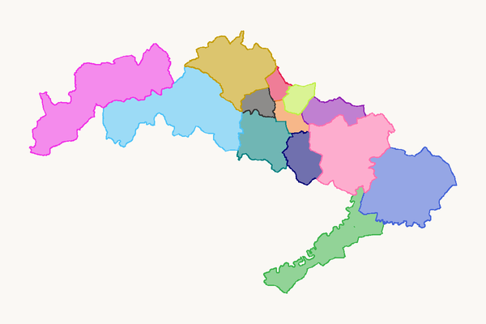
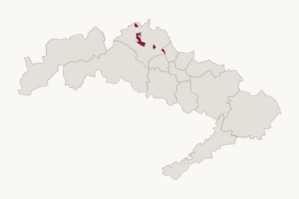

Arciprestazgos y parroquias
Mapa de los 13 arciprestazgos y las 127 parroquias de la diócesis, con la ficha de cada parroquia: dirección, contacto, extensión y territorio.

Previsión de desarrollos urbanísticos
Desarrollos residenciales previstos hasta 2045 en el territorio de la diócesis según ABC (octubre de 2026), con las parroquias en las que se sitúan.